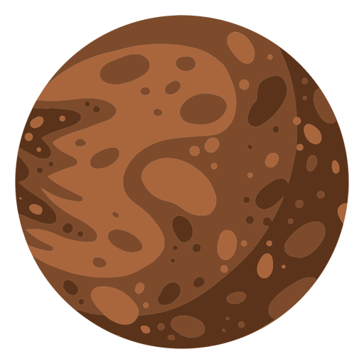

Mercury | Меркурий
Первая планета солнечной системы - Меркурий.
Самая маленькая планета Солнечной системы имеет радиус всего 2440 км. Период обращения вокруг Солнца, для простоты понимания приравненный к земному году, составляет 88 дней, при этом оборот вокруг собственной оси Меркурий успевает совершить всего полтора раза. Таким образом, его сутки длятся приблизительно 59 земных дней. Долгое время считалось, что эта планета все время повёрнута к Солнцу одной и той же стороной, поскольку периоды его видимости с Земли повторялись с периодичностью, примерно равной четырем Меркурианским суткам. Это заблуждение было развеяно с появлением возможности применять радиолокационные исследования и вести постоянные наблюдения с помощью космических станций. Орбита Меркурия – одна из самых нестабильных, меняется не только скорость перемещения и его удалённость от Солнца, но и само положение. Любой интересующийся может наблюдать этот эффект.
Created by:
website: Drobkov Kirill
information: Pilyavets Dominik